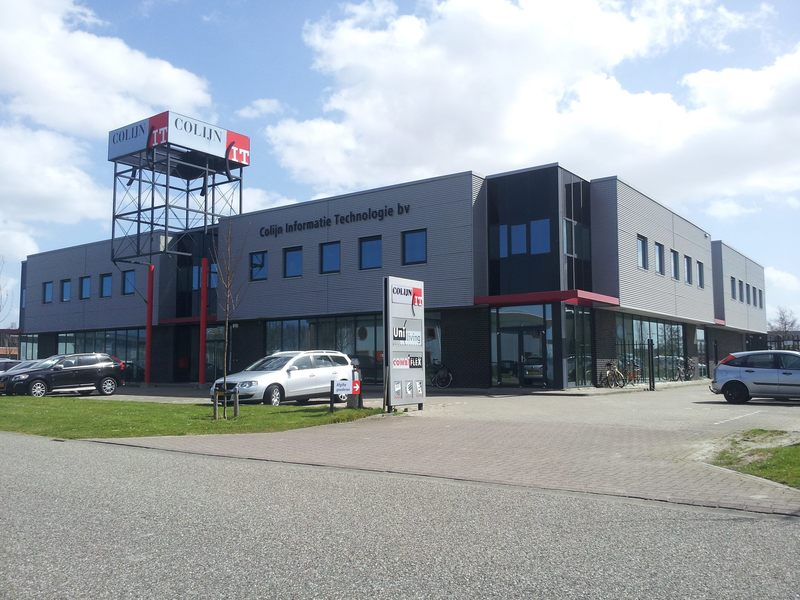

HBO-I job event
Info Support
De kern van de dienstverlening van IT dienstverlener Info Support draait om infrastructuur en maatwerksoftware.
Functies en Technieken
- .NET developer
- Heeft voldoende kennis van relationele databases en SQL.
- .NET IT-architect
- Kan op een eenduidige manier ontwerpen en ontwikkelen.
- Database administrator
- Verantwoordelijk voor de beschikbaarheid en de veiligheid van de database server.
- Infrastructure engineer
- Verantwoordelijk voor het behren van netwerken, servers en middleware.
- Business intelligence engineer
- In staat om zelf informatie te ontwikkelen. Hij kan hierdoor de brug slaan tussen informatie consumenten en IT.
betabit
Toonaangevende spelers uit uiteenlopende branches schakelen Betabit in voor de automatisering van hun belangrijkste processen.
Functies en Technieken
- Software ontwikkelaar
- Het werken met C# is de belangrijkste vaardigheid.
- Software tester
- Oog hebben voor de kleinste foutjes.
- Advisuer
- Moet een team kunnen de juiste richting op kunnen sturen.
- Program manager
- Dit is de leider van een team. Bij deze functie moet je zowel kennis hebben, als leiding kunnen geven.
- P(eople)-manager
- Iemand met de juiste kwaliteiten om human resource functies uit te voeren.
Quintor
Quintor is een toonaangevend bedrijf op het gebied van Agile software development, Front-end technologie en Platform Engineering.
Functies en Technieken
- JAVA developer
- Moet de taal JAVA tot in de vingertoppen beheersen.
- .NET developer
- Heeft voldoende kennis van relationele databases en SQL.
- Front-end developer
- Moet kunnen denken vanuit de gebruiken.
- Platform engineer
- Heeft kennis van frameworks.
- Agile analysis
- Moet veranderingen kunnen voorspellen en het team daar op voorbereiden.
Ordina
Wij bedenken, bouwen en beheren ICT-toepassingen bij de overheid, in de financiële dienstverlening, de industrie en de zorg.
Functies en Technieken
- Scrum master
- Scrum is een vorm van Agile, planning is daarom één van de belangrijkste dingen.
- .NET developer
- Heeft voldoende kennis van relationele databases en SQL.
- Tester (automatiseerder)
- Heeft een brede talen kennis en kan daardoor snel fouten aanpakken en dingen automatiseren.
- JAVA developer
- Moet de taal JAVA tot in de vingertoppen beheersen.
- Devops engineer
- Heeft kennis van coderen en scripten en moet goed kunnen communiceren met anderen.
Qompas
Qompas is een bedrijf dat mensen wilt helpen met solliciteren om zo de juiste in druk achter te laten bij een bedrijf.
Functies
- Front-end developers
- Kan denken vanuit de klant om zo een gebruiksvriendelijke omgeving te creëren.
- Back-end developer
- Pakt de geavanceerde onderhuidse taken aan.
- Data beheerder
- Heeft veel kennis van relationele databases en SQL.
- IT project managers
- Kan goed en duidelijk communiceren om een project soepel te laten verlopen.
- Tester
- Moet oog hebben voor de kleinste details om zo fouten te kunnen verhelpen.
Bedrijvensafari
Omoda
Omoda is een schoenen winkel met een online webshop.
Ik geef dit bedrijf een:6/10
Omoda was het eerste bedrijf dat we deze dag bezochten. We liepen het gebouw binnen en iedereen was gelijk onder de indruk van de architetuur. Dit is niet het geen waarvoor we kwamen, we mochten even wachten in de kantine. Ook deze zag er piek fijn uit. Na een klein kwartiertje te hebben gewacht werden we opgehaald door twee medewerkers en werden we meegenomen naar het magazijn. Het aantal schoenen dat daar stond was enorm indrukwekkend. Helaas is dit ook het geen wat bij mij het meest is blijven hangen. We kregen veel uitleg over de verschillende machines in het sorteer gedeelte. Hier komen alle retour pakketjes binnen. Ook worden vanuit hier de uitgaande bestellingen verwerkt. De achterliggende gedachte van al deze verhalen over de machines is natuurlijk dat dit met IT te maken heeft. Alle machines worden door software aangestuurd. Ieder labeltje dat gescand wordt moet natuurlijk wel goed verwerkt worden. Helaas was de tijd toen op... we zouden namelijk nog even naar de IT-afdeling gaan kijken. IK vermoed dat hier niet veel interessants te zien is. Maar even kijken is altijd leuk. Van alle bedrijven waar geweest zijn. Sprak dit bedrijf mij niet bijzonder aan. Met name omdat het IT gedeelte nog al een grijs vlak is.

Your Surprise
Your Surprise is een webshop die gepersonaliseerde cadeau's levert.
Ik geef dit bedrijf een:8/10
Na het bezoek aan Omoda zijn we met de bus naar Your Surprise gebracht. Your Surprise is een heel ander soort bedrijf. Het bedrijf is veel kleiner en dat was alleen aan het pand al zichtbaar. Maar des ondanks niet minder leuk! We werden ontvangen en kregen een presentatie over wat voor bedrijf Your Suprise is. Hierdoor kreeg je al snel een duidelijk beeld van het bedrijf. Ook de het IT-gedeelte werd leuk toegelicht. We kregen een stukje geschiedenis van de website te zien. Het bedrijf is begonnen op een zolderkamertje waar gepersonaliseerde CD's met verjaardags liedjes gemaakt werden. Dit is later uitgebreid met veel andere producten tot het heden. Your surprise is ook bezig met machine learning. Dit sprak me enorm aan. Zo werden klanten die geïteresseerd zijn in kalenders veel vaker kalenders getoond. Maar dat is niet het enige. Zo worden ook de standaard foto's die op de kalenders staan(of andere producten staan) aangepast. Wanneer je een kalender configureert met familie foto's zullen de product foto's ook vaker familie foto's bevatten. En dit moet de verkoop bevorderen.
Syntess
Syntess is een software producent voor bedrijven.
Ik geef dit bedrijf een:4/10
Na Your Surprise weer de bus in een daarna door naar Syntess. Bij Syntess waren we al snel onder de indruk van het poffertjeskraam en het frietkraam. Vervolgens mochten we buiten in de geur van friet en poffertjes nog lekker even wachten. Vervolgens naar binnen en naar een vergader ruimte. Ik had hoge verwachtingen van dit bedrijf. Ik heb als voorbereiding de webpagina van Syntess als eens bezocht. En daaruit kon ik opmaken dat Syntess een groot software bedrijf is dat op Europese schaal software produceert. De presentatie begon. Deze werd gegeven door twee wat oudere mannen die niet meer echt een aansluiting hebben met de "jeugd". Hierdoor verliep de presentatie wat ongemakkelijk en viel de aandacht snel weg. Vervolgens kwamen nog een aantal oud HZ studenten vertellen over Syntess. Ook bij hun was aan het gezicht af te lezen dat ze het niet enorm naar hun zin hebben daar. Of ze hadden echt geen zin in deze presentatie, dat kan natuurlijk ook. Vervolgens mochten we een hele hoop ballonnen opblazen en daar gezichtjes optekenen. Deze werden vervolgens allemaal weer lek gestoken omdat ze "niet goed" waren. De afmetingen klopten niet. Flauw! Het idee hierachter is natuurlijk dat je heel precies moet zijn in de IT wereld. Maar volgens mij worden de eisen dan ook vooraf vastgelegd... (na afloop mochten we wel friet en poffertjes halen!)

Car collect
Car collect is een website die aanbieder met vrager verbindt.
Ik geef dit bedrijf een:6.5/10
Na de overheerlijke lunch bij Syntess snel de bus weer in en richting Goes. Ondertussen was het ongeveer al twee uur 's middags. En na al drie bedrijven bezocht te hebben en in een hete bus gezeten te hebben begin je toch aardig suf te worden. Bij Car Collect werden we ontvangen door een typische , ietwat gladde, auto verkoper. We werden meegenomen naar binnen en net als bij Syntess naar een soort vergader ruimte gebracht. Hier kregen we een presentatie van Ivan. Een bulgaarse man waarvan zijn Nederlands niet de beste is. Dus de presentatie was in het Engels. Dus even alle aandacht erbij en goed luisteren. We kregen een klein verhaaltje te horen over wat Car Collect inhoudt. Wat Car Collect inhoudt is puur het verbinden van autodealers met elkaar. Simpel weg: De ene dealer biedt een auto aan. Daar komen gemiddeld tien biedingen op. En de hoogste bieder krijgt de auto. Deze biedingen zijn niet zichtbaar voor andere dealers. Hierdoor zal de prijs sneller stijgen. Ook Car Collect gebruikt een beetje machine learning. Zo worden bij foto's van auto's automatisch de kant van de auto gedetecteert. En dat is best wel gaaf.
Colijn IT
Colijn IT produceert software voor meubel configuraties.
Ik geef dit bedrijf een:6/10
Safe the best for last zeggen ze wel eens. In dit geval sloeg dat helemaal nergens op. Want Colijn IT was één van de minder interessante bedrijven. We werden wel goed ontvangen met cola en een bolus. En kregen toen (weer) een presentatie. Colijn IT maakt wel hele gave software maar de manier waarop het gebracht werd was wat saaier. Colijn IT is momenteel bezig met een woonkamer configurator. Wij kregen een sneakpeak! Hierin kunnen dan verschillende meubelen geplaatst worden zodat de meubels al uitgezocht kunnen worden nog voordat je nieuwe huis gebouwd is. Wat wel grappig was om te zien is dat ze nog wel tegen een aantal performance issues aanlopen. Zo duurde het plaatsen van een bank enorm lang en haperde het draaien door de ruimte nog enorm. Ook zijn ze bezig met een VR-functie te implementeren in deze software. Helaas konden ze deze nog niet laten zien. Als afsluiter kregen we nog een kleine rondleiding door het gebouw. Dat was niet heel spannend. En vervolgens mochten we met z'n alle de bus weer in en toen terug naar de HZ.
